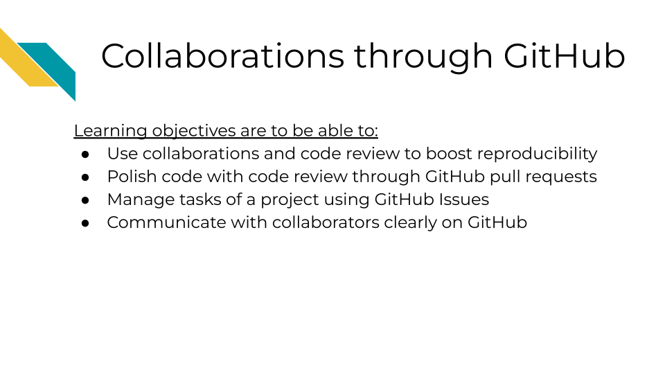
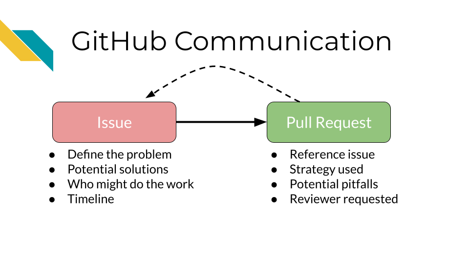
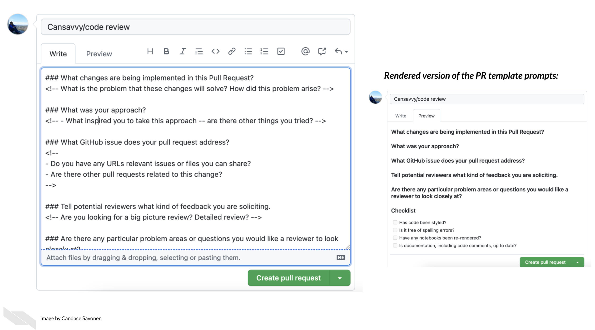
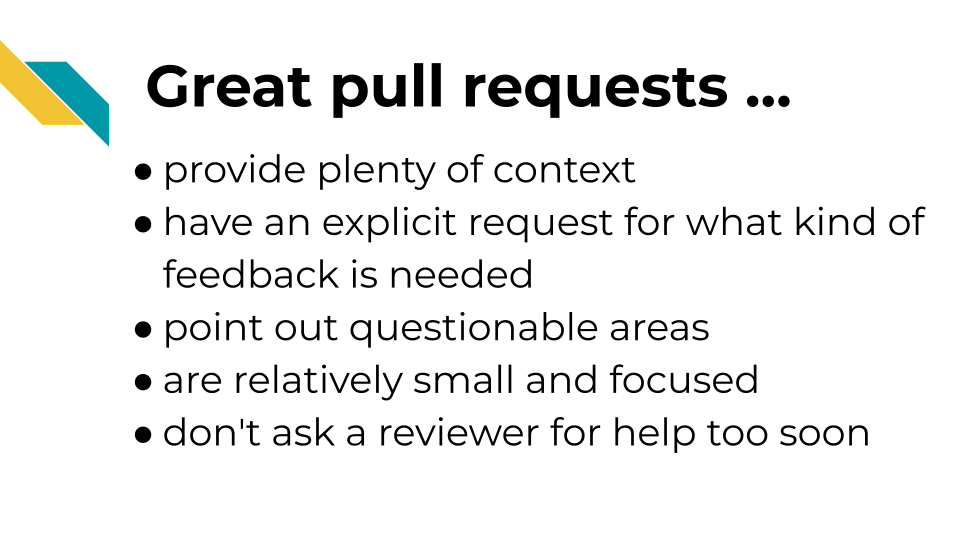
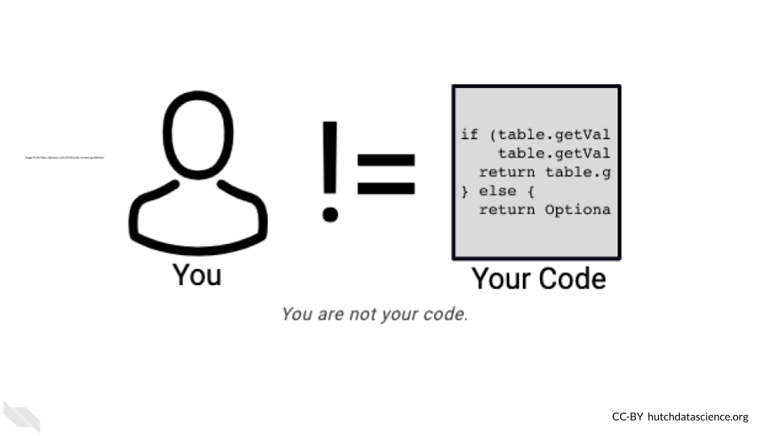
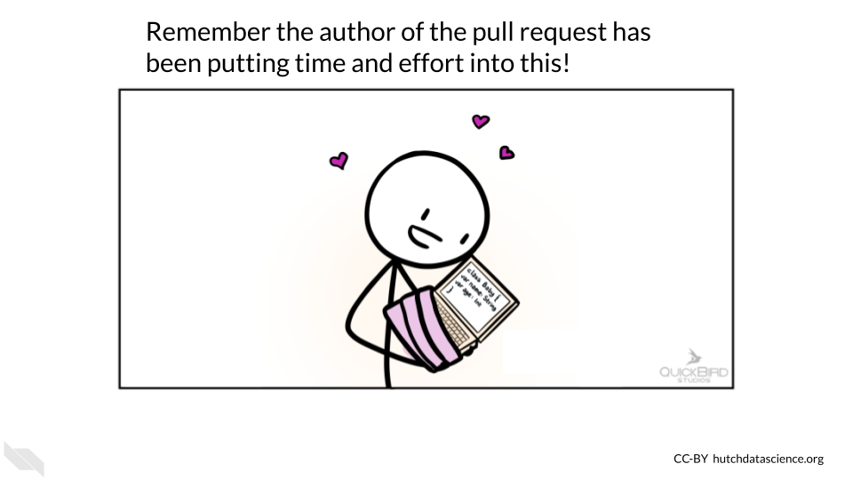
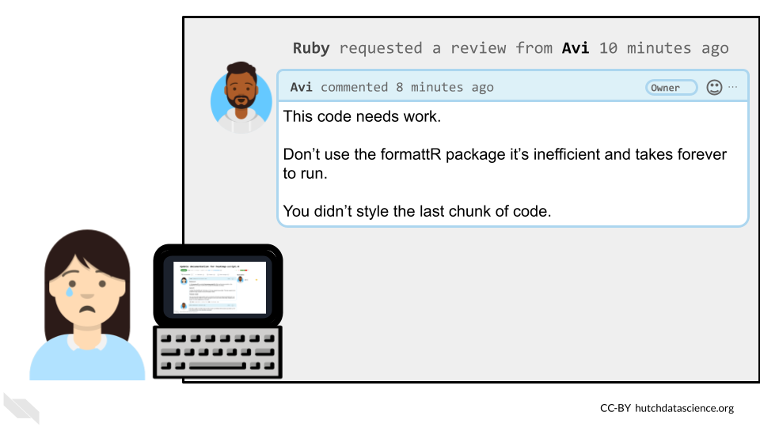

Chapter 12 Collaborations through GitHub

12.1 Components of collaborating on GitHub
As noted previously, GitHub is not only great for sharing and version control but, it is also great for collaborating!

This collaboration can be done through the use of issues and pull requests!
 ### Step 1. A problem identified/issue created
GitHub issues are where we can note, plan, and discuss work for a project. It might first be filed by one person but then used for further discussion between multiple people to define a problem or new request. Once the issue is scoped and defined enough it can be assigned to someone to work on it.
12.1.1 Step 2. Proposing a solution
Creating a pull request is proposing a solution that addresses the original issue. The author of the pull request creates a new branch with the necessary changes to address the issue. The pull request description should reference the original issue to explain what problem or request the work is addressing. It should also explain how the work addresses it. Finally, a reviewer can be requested for feedback.
12.1.2 Step 3. Reviewer looks at proposed solution
Now the reviewer is given a chance to look at the proposed solution and approve and or otherwise improve it in collaboration with the original author.
12.1.3 Step 4. Refined solution is deployed
Once both the author and the reviewer agree the work is ready, the changes can be merged and deployed to the main branch! Yay! Time to celebrate.
The main branch is the ground truth branch where the final product of the code is created from. Development branches on the other hand, propose changes that can be added to the main branch.
Now the process can be repeated for the next issue!
12.2 Issues should tell us:
- What the problem is - including examples or screenshots to demonstrate the problem.
- What solution(s) could address the problem?
- Who might be assigned to addressing this problem?
- Potentially what timeline or urgency the problem has.
12.3 Pull Requests should tell us:
- What issue is the work addressing?
- How is it addressing the issue?
- What pitfalls exist?
- What should be looked at and reviewed carefully.
12.6 Characteristics of great pull requests and issues
12.6.1 There’s plenty of context!
What’s the story behind the changes you are proposing? Sometimes when we are in the thick of a project we can make the mistake of assuming everyone knows what we know. This can unfortunately leave a huge burden on your reviewer to try to understand what you are doing.
Before sending off a review request, re-read your PR description and think about the perspective of your reviewer. Err on the side that they have no idea what is happening on the project (because sometimes this is the case!)
Tell a short story to explain what lead to you making these changes including attempting to answer these questions:
- What is the problem that these changes will solve?
- Do you have any URLs, relevant issues, or files you can share?
- What inspired you to take this approach – are there other things you tried?
- Are there other pull requests related to this change?
You can type the world “resolves” and then include the issue number with a # and it will close the issue when you merge the pull request
You can type the world “resolves” and then include the issue number with a # and it will close the issue when you merge the pull request
12.6.2 Includes an explicit request for what kind of feedback is needed
What would you like your reviewer to do with this pull request? Stating this explicitly can save both of you time in this code review process.
- Are you still in the early stages and looking for a bigger picture review? Let them know that before they waste their time digging into the code line-by-line.
- Are you in the later stages and looking for a detailed nit-picky review?
- Are you looking for feedback on the results or methods?
12.6.3 Points out questionable areas that need extra attention
Are there specific areas of the code you are having trouble with or are unsure about? Send a link to the specific lines in GitHub you are asking about. Are there results that are surprising, confusing, or smell wrong?
Be sure to detail what you have dug into and tried at this point for any problematic points. This can help the reviewer to avoid suggesting potential solutions that the author has already tried.
12.6.4 Are relatively small and focused
Try to make sure your pull requests aren’t too long! Code reviewing fatigue is very real. If you send a reviewer thousands of lines of code to review it will be very overwhelming to review or understand.
10 lines of code = 10 issues.
— I Am Devloper ((iamdevloper?)) November 5, 2013
500 lines of code = "looks fine."
Code reviews.
Alternatively, when you create a new branch try to set a very intentional (and relatively small) goal you would like to achieve with your upcoming pull request. Keeping your pull requests small and focused on one task at a time will not only help your reviewers but also will help yourself feel more accomplished and organized.
Also recall that incremental changes are good! Perhaps you do have a very large restructuring of your repository you are trying to accomplish, but finding smaller reasonable sets of changes (which would each have their own pull requests) to reach that goal incrementally can help keep things more manageable. This can also be very valuable if you decide that you want to go back to a previous version. It can be easier to tell when a change was introduced if you have smaller pull requests.
If you have changes that might be interdependent, you can make a pull request based on another existing pull request, using something called stacked pull requests in GitHub.
12.6.5 Don’t ask a reviewer to dig through dirty code
Determining when a pull request is fully cooked and ready for review is a skill in itself. Pull requests that haven’t had enough time to be polished can put an unnecessarily large burden on the reviewer. On the other hand, pull requests that have been hashed and rehashed in a silo might have benefitted from big picture feedback at an earlier stage of the code. This balance is something that you and your team can figure out in time using lots of communication!
This being said, the first reviewer of your code should always be yourself! Take time to review your own changes by clicking on the Files Changed tab and going over that section carefully.
- Are all the changes included that you were expecting?
- Are there any changes you didn’t expect that are showing up? These can be symptomatic of a deeper problem. Definitely dig into anything that is not what you expected.
- Set aside your changes and return them in a few hours, or the next day. Looking at your changes with fresh eyes may also allow you to find things you didn’t notice before.
Additional tip, if you don’t want others to look at your pull request yet because you are still working on reviewing it, you can change it to a draft pull request so no one reviews it before you are ready. This can also be a handy tactic to use if you just want to ask for big picture feedback from someone but want to make it clear that the pull request is not anywhere near ready for merging to main.
![Ruby has filed a much smaller pull request with a better PR description: Background: In this previous PR we updated the heatmap-script.R file. But now the documentation in the README is out of date. This PR aims to update the README accordingly. Approach: I updated the README with information on the new arguments we added. This also required me to update the Usage section and recommendations there. Feedback needed: Can you look at the Usage section and try running the command and steps described there? I am concerned that this section is not clear enough but I am not sure how to add clarity. Please let me know if you have suggestions on this point. She has then requested Avi to review this PR. Avi responds back: Ruby this is great! I was able to dig into this and give you feedback at the places you asked. Let me know what you think of my ideas and comments! This code review situation has been very productive!](resources/images/13-collabs_files/figure-html/1MNHf8JpolaEP_vQ_kB-1xRBF9wo3haCArRu117hBoHA_g33bf0789107_300_2555.png)
12.6.6 Pull Request Templates
Add a pull request template to your repository! This will help initiate consistent and clear communication around the pull requests in your repository.
Pull request templates are a way to give yourself and other contributors prompts when starting a new pull request. See below for an example. The comments between <!-- and --> are html comments that will not show up so you don’t need to delete them if you don’t want to. On the right side, it shows how this template looks when it’s rendered. You can see this at any time by clicking Preview – this is true in other places in GitHub.


12.6.7 Preparing for the return of your review
As you wait for your reviewer to get back to you, it can be helpful to remind yourself what the purpose of code review is to get yourself in a positive mindset. You’ve given your reviewer information to help them help you and now is the time to wait.
First of all, you should pat yourself on the back for engaging in code review. It does require more time and sometimes that can feel scary with looming deadlines, but kudos for being able to prioritize your commitment to creating increasingly more reproducible analyses! Furthermore, it can ultimately save you time over more extensive projects by keeping everyone up-to-date!
Remember that you are not your code and mistakes are all a part of the process! Putting your project out there can feel a tad vulnerable. You may have felt the impulse to keep your code’s problems buried under a rug, but you pushed past that and are making your analyses transparent! Remember that hidden problems don’t get solved, but known problems are opportunities for reaching an even better end result!

When you receive a review back remember that you and the reviewer are on the same team and both want the best end result feasible for this project! They may suggest ideas that you love and can’t wait to implement. They also might suggest ideas you don’t agree with. Do your best to take all their comments as positive learning opportunities and look for ways to compromise and determine solutions collaboratively.
12.7 Engaging in Code Review - as a reviewer
When reviewing a pull request, you take on responsibility to ensure that the pull request is getting the project to a better state than before.
There are three aspects to reviewing we will focus on:
- Identify areas in the code and documentation that are opportunities for improvement.
- Communicate your questions and concerns effectively and in a way that creates a positive atmosphere.
- Determine solutions collaboratively in a way that allows for learning as well as a long-term improved product.
12.7.1 What to look for!
Depending on the goals of the project, and pull request there can be a lot to keep an eye out for. There are many articles out there about what to look for in a code review.
Here’s some general points:
- Does the analysis answer the question it’s asking? Are the methods it uses to do so appropriate?
- Is the code clear and readable? Does it contain a healthy amount of comments and documentation for individuals not familiar with the project to understand generally what is going on?
- Is the code efficient with computational resources? (Are there areas that are a bit too greedy with memory usage?)
- Does the code stick to the style and conventions of this project?
- Are there alternate scenarios where the current strategy might fail? (depending on the likelihood, this may be an instance for a new issue and another pull request).
12.7.2 How to communicate it
The pull request may be the author’s precious bundle. Try to be empathetic to the learning process! You are both working on this project together – assume you both want the best out of this project. If something seems wrong, work together to find a solution, don’t ever waste time on placing blame.

Remember that everything sounds harsher when you don’t have in-person cues! In this example, Avi may be stating factual things, but without his pleasant and reassuring disposition, it can feel super harsh.

If Avi had reframed his comments, they might be more effective in this collaboration. (Babatunde2018?) suggests framing review comments in three ways to help communication: questions, suggestions, and appreciations.
12.7.2.1 Questions
For example:
What happens if this doesn’t get saved? Does it throw an exception or fail silently?
The key is to be specific with the questions. Mention exact file names. Put comments on the line you are referring to. Explain what you think is happening and ask them to explain if that is correct.
12.7.2.2 Suggestions
For example:
I suggest you use an ArrayHelper getValue method here because of its error handling capability instead of accessing the value directly You could even go further by giving an example: $a = $b[‘key’]; would raise an error if key is not set but \(a = ArrayHelper::getValue(\)b, ‘key’); would return a null value if key is not set.
Giving suggestions and explaining not only how to implement them but why they might be preferred in this scenario is a great learning process both for the author and yourself.
12.7.2.3 Appreciations
Start every review comment with appreciation for the hard work completed! This goes a long way for creating a positive atmosphere.
For example:
Nice Job! Alice. I suggest we create an interface for this service so other substitute services can implement the interface as well, this would enable us change to a different service with very minimal efforts when the need arises. What do you think?
Let’s see how Avi’s message could have been reworked to give a more effective review:
![Ruby has requested a review from Avi but alternatively, Avi has framed his review in a more effective manner, giving context, examples, and creating a much more positive collaboration. Avi’s review says: Ruby, thanks for all this work! This is a great start! I have a few questions so we can further polish this code. Is your usage of the formattR package because of the weird formatting of the data.tsv file? Perhaps we can brainstorm another approach to this that would allow us to get rid of this package requirement. I think that in your last chunk you may have forgotten to style the code according to the conventions for this repository. Perhaps we can discuss how we introduce something to help all authors of this repository adhere to the conventions. This may be an instance we can use automation or a checklist to help. Ruby happily accepts this review and the collaboration will create a better product.](resources/images/13-collabs_files/figure-html/1MNHf8JpolaEP_vQ_kB-1xRBF9wo3haCArRu117hBoHA_g33bf0789107_300_2679.png)
This interaction reminds us that effective code review is steeped in empathy from both sides. Authors need to appreciate the time and effort the reviewer is spending to help them; while reviewers need to be sensitive to the amount of effort put in by the author already.
12.7.2.4 Recommended reading about code review
- Why code reviews matter (and actually save time!) by (Radigan2021?).
- Pull request descriptions by (Banuelos2020?).
- A zen manifesto for effective code reviews by (Fabre2019?).
- Best practices for Code Review by (Smartbear2021?).
- Comments during Code Reviews by (Babatunde2018?)
- On Empathy and Pull Requests by (Hirpa2016?).
- Code Review Guidelines for Humans by (Hauer2018?).
- Your Code Sucks! – Code Review Best Practices by (Hildebr2020?).
- An even longer list of readings about code review